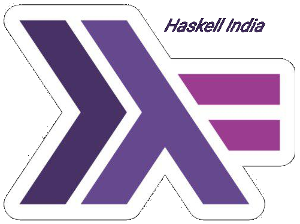

Home
Welcome to the Haskell India blog!
We are the Haskell India Group, working on to create the India's Haskell Story.
At the time of creation of this group, Haskell was (and is still) not a very popular programming language in many mainstream companies. Although many seasoned programmers and enthusiasts were very convinced of the advantages of Haskell, and its ability to boost productivity of programmers, type-safety leading to lesser bugs, and what-not, it was still a pain to connect to Haskellers across India.
HIG stands to fill that gap. We want to provide commercial establishments such as startups or other other big companies, a good community of Haskellers that they can address to. On the other hand, we want to provide access for haskellers, opportunities to use their skills in startups and other big companies within India. Since many Haskellers are also open for remote work, this group also helps to connect a large group of potential candidates for remote work.
Within the community, there is always a need for great technical discussions. Telegram, like WhatsApp, is super-good for instant gratification when a question is asked. Unlike WhatsApp, Telegram keeps the conversations in cloud: that gives us a great advantage that new comers to the group instantly get access to conversations that happened before they joined. Additionally, telegram groups can have really large number of members: something that we want badly!
So, come, join the India's Haskell Story, join Haskell India Group!
Posts
Check here for some of our recent posts:- Using Hakyll with Github - February 24, 2019
…or you can find more in the archives.